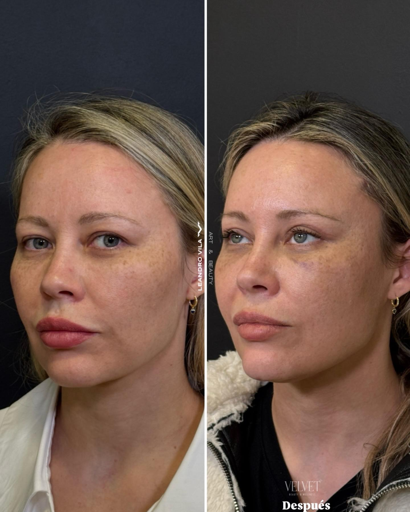

Deep Plane Facelift y Lifting Facial en Buenos Aires
Dr. Leandro Vila — Cirujano Plástico especializado en cirugía facial y rejuvenecimiento facial.
Deep Plane Facelift en Buenos Aires
Cirugía de rejuvenecimiento facial que permite reposicionar los tejidos profundos del rostro para recuperar definición, armonía y una apariencia natural.
Cirugía facial enfocada en resultados naturales
El envejecimiento modifica progresivamente la posición de los tejidos del rostro, el contorno mandibular, las mejillas y el cuello. El abordaje quirúrgico debe adaptarse a la anatomía de cada paciente.
El Dr. Leandro Vila trabaja con diferentes técnicas de rejuvenecimiento facial, incluyendo Deep Plane Facelift, lifting endoscópico, SMAS cervicofacial y otros abordajes según las características y necesidades de cada paciente.
El objetivo es reposicionar los tejidos y preservar la identidad facial, evitando un resultado artificial o excesivamente tensionado.
¿Qué es el Deep Plane Facelift?
El Deep Plane Facelift es una técnica avanzada de lifting facial que permite trabajar en planos profundos de los tejidos faciales para reposicionar estructuras que han descendido con el paso del tiempo.
A diferencia de los procedimientos que se concentran principalmente en la tensión de la piel, el abordaje Deep Plane busca trabajar sobre los tejidos profundos y sus relaciones anatómicas.
El objetivo es conseguir una apariencia rejuvenecida manteniendo las proporciones y características propias de cada rostro.
La indicación depende de factores como la anatomía facial, la calidad de los tejidos, el grado de envejecimiento, el cuello y las expectativas del paciente.

Planos Sub-SMAS y Ligamentos
¿Qué zonas puede mejorar un Deep Plane Facelift?
Cada anatomía presenta requerimientos específicos definidos en la evaluación médica.
Mejillas
Reposicionamiento malar hacia el pómulo.
Tercio medio
Suavizado de la transición párpado-mejilla.
Surcos
Atenuación natural sin rellenos artificiales.
Mandíbula
Corrección de jowls y línea mandibular nítida.
Cuello
Definición del ángulo y tensado de platisma.
Contorno
Armonía global preservando tu identidad.
Deep Plane Facelift vs. otras técnicas de lifting
La elección de la técnica depende de la anatomía, el grado de envejecimiento y los objetivos de cada paciente.
| Técnica | Plano Anatómico | Tratamiento de Tejidos | Indicación Principal |
|---|---|---|---|
| Deep Plane Facelift | Sub-SMAS profundo | Liberación de ligamentos y reposición en bloque | Tercio medio, mandíbula, jowls y cuello |
| Lifting facial / SMAS | Superficial / Plicatura SMAS | Plegamiento sin liberación ligamentaria amplia | Indicación individualizada según laxitud |
| Lifting endoscópico | Subperióstico con microcámara | Elevación mediante microincisiones ocultas | Cejas, frente y mirada cansada |
¿Deep Plane o lifting endoscópico?
El lifting endoscópico es ideal para tercio superior (cejas y frente), mientras que Deep Plane reposiciona mejillas, mandíbula y cuello.
Casos Clínicos de Rejuvenecimiento Facial
Resultados reales con consentimiento de pacientes del Dr. Leandro Vila en Buenos Aires.
Ponytail Lift + Rinoplastia Ultrasónica
Elevación endoscópica del tercio superior y pómulos sin incisiones visibles en cara, combinada con remodelación nasal piezoeléctrica para un resultado armónico.

Casos de Deep Plane Facelift: Por respeto al secreto médico y privacidad, las fotografías clínicas de Deep Plane se comparten en la consulta individual de evaluación.

M.N. 147814
Matrícula Nacional
Dr. Leandro Vila
Cirujano Plástico especializado en cirugía facial
El Dr. Leandro Vila es médico especialista en Cirugía Plástica, Estética y Reparadora (M.N. 147814). Su práctica médica y quirúrgica está orientada a procedimientos de rejuvenecimiento facial avanzado de máxima precisión anatómica.
Es Miembro Titular de SACPER (Sociedad Argentina de Cirugía Plástica, Estética y Reparadora). Atiende en su consultorio de Puerto Madero a pacientes de CABA, Gran Buenos Aires e internacionales.
+15
Años Formación
+500
Procedimientos
SACPER
Miembro Titular
“Desde la primera consulta hasta el alta, todo fue impecable: profesionalismo, calidez y un acompañamiento constante. Quiero agradecer especialmente al Dr. Vila por su excelente trabajo, su claridad para explicar cada paso y la tranquilidad que transmite.”
Petu Baez · Opinión de Google
Preguntas frecuentes sobre Deep Plane y Lifting Facial
Deep Plane Facelift en Puerto Madero, Buenos Aires
location_on Aimé Painé 1665, Puerto Madero, C1107 Ciudad Autónoma de Buenos Aires
call 011 15-3958-3670
schedule Lunes a Viernes de 9:00 a 19:00 hs (con cita previa)
Planifiquemos tu evaluación médica
Cada intervención comienza con una valoración personalizada de tu anatomía facial para definir el plan más armónico y natural para tu rostro.
La información de este sitio tiene carácter informativo y no reemplaza una evaluación médica presencial.